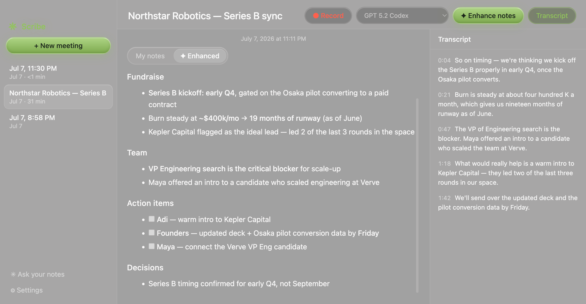

For five thousand years, scribes kept the record — faithfully, privately, by hand. Scribe continues the craft on your Mac: it listens locally, turns your rough fragments into beautiful notes, and never lets your words leave your machine.

While the meeting runs, whisper.cpp turns speech to text entirely on your Mac — the transcript unfurls live in the margin. The recording exists in exactly one place on Earth: your disk.
Scribble half-thoughts while people talk — that's all Scribe needs. The moment you hit stop, your shorthand and the transcript are inked into structured notes: summary, decisions, action items with owners. The meeting even titles itself.
Every meeting you've ever captured becomes one long, searchable memory. Ask in plain words; Scribe answers from your own record — and tells you which meeting it's quoting.
What did I promise last week?
What is said in your meetings — who you met, what was promised, what you really think — is among the most sensitive information you produce. A good scribe guards it with their life. Ours guards it with architecture: there are no servers to breach, no accounts to leak, no cloud to subpoena. There is only your Mac, and what you choose to do with it.
Recording and transcription are 100% local. Nothing is uploaded — to us or anyone. There is no “us.”
Plain JSON and WAV on your disk. Grep them, back them up, burn them. No export button — nothing was ever taken.
MIT-licensed open source. No subscription, no seats, no premium tier. The AI is your key, your choice — even the $0 one.
Meetings are the first chapter. Next, Scribe learns your calendar, your mail, your calls — so it knows what's coming, captures what happened, and remembers what was promised. Always on the same terms: local-first, your keys, your files, free.
Scribe stays model-agnostic through Concentrate AI — one key, one endpoint, and the whole model fortress: Claude, GPT, Gemini and 150+ models with honest per-token pricing. Their free model runs Scribe end-to-end at $0.